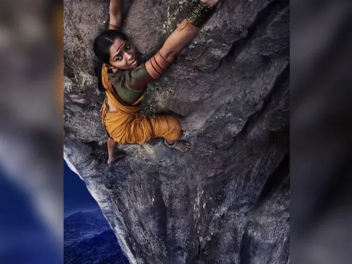

The Bastion of Bravery at Raigad Fort
Scroll Down
Hirkani was a simple milk-seller who lived in a village below Raigad Fort. She came daily to sell milk inside the fort. One evening, the gates closed at sunset, trapping her inside. Her baby was alone at home in the valley. Out of motherly love and courage, she risked her life and climbed down the steep 1,500-foot cliff at night to reach her child.
When Chhatrapati Shivaji Maharaj heard about her bravery, he was moved. He declared her a true heroine and named the bastion as Hirkani Buruj, ensuring that her courage would be remembered forever in history.
Hirkani Buruj is situated on the southern edge of the fort, overlooking a deep valley of the Sahyadri mountains. The cliff is almost vertical, making it nearly impossible to climb. Today it also serves as a viewpoint, offering breathtaking scenery to visitors.
Hirkani’s story shows that bravery is not only found in warriors but also in ordinary people. She became a symbol of motherhood, love, and fearlessness. Her tale is told in Marathi folklore, plays, and is included in school lessons across Maharashtra.